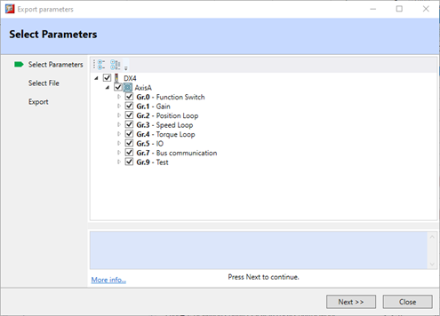
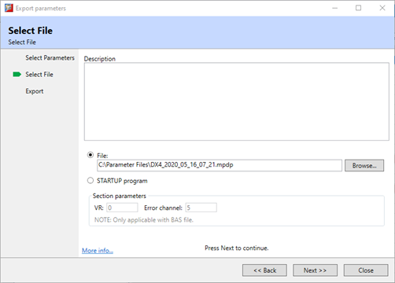
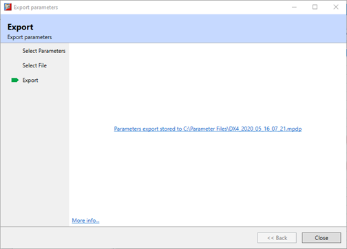

EtherCAT Drive Export Parameters
Export Parameters is step-by-step export wizard which allow
full or partial parameter set to be saved to a file or to a STARTUP program.
The wizard sequence is:
-
Select Parameters, select which parameter values
should be included in the export

-
Select File
, enter a
description for the export. Select either a file name and location or the
STARTUP program.

-
Export,
progress bar to show status of export, follow by a hyperlink to the file
location or the STARTUP program.
